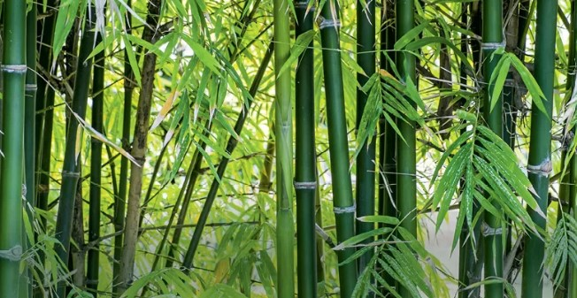

Bambu é uma planta de rápido crescimento, pertencente à família das gramíneas. Conhecida por sua resistência e flexibilidade, é amplamente utilizada em construção, artesanato e fabricação de móveis.
Além disso, o bambu é uma fonte sustentável, já que pode ser colhido sem a necessidade de replantio. Sua capacidade de absorver grandes quantidades de dióxido de carbono contribui para a redução do efeito estufa.
Na cultura e tradições de muitos países asiáticos, o bambu simboliza força, resistência e flexibilidade. Sua versatilidade e impacto ambiental positivo tornam-no uma escolha ecológica popular.
O bambu é encontrado em diversas regiões tropicais e subtropicais do mundo, especialmente na Ásia. Países como China, Índia e Japão são conhecidos por suas vastas florestas de bambu.
Além da Ásia, o bambu também cresce na África, América Latina e partes da Austrália. Sua adaptabilidade permite que ele prospere em vários tipos de clima e solo.
No Brasil, o bambu pode ser encontrado na Mata Atlântica e em várias regiões do país. Sua presença é valorizada tanto pela biodiversidade quanto pelo uso sustentável em diversas indústrias.